Cukrový krámek
Dorty a makronky na objednávku v Brně
Cukrárna s kávou a zahrádkou v Brně, Pastrnkova 681/1.
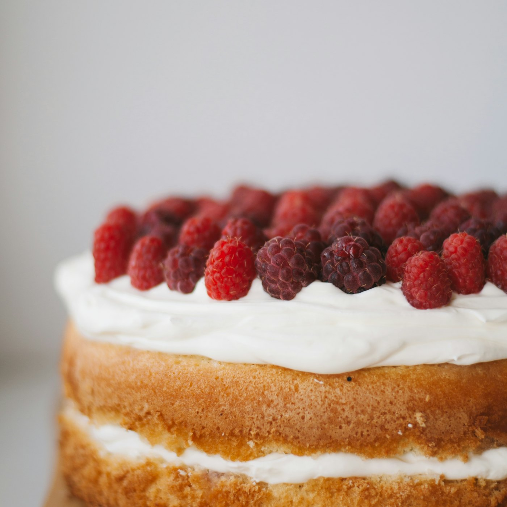
Zastavte se v krámku
Pastrnkova 681/1
615 00 Brno Ukázat na mapě
615 00 Brno Ukázat na mapě
Aktuální otevírací dobu najdete na Facebooku nebo zavolejte.
Dorty a makronky Brno na Facebooku +420 604 214 057- Platba kartou
- Zahrádka
- Wi-Fi
Od makronek po vlastní chléb
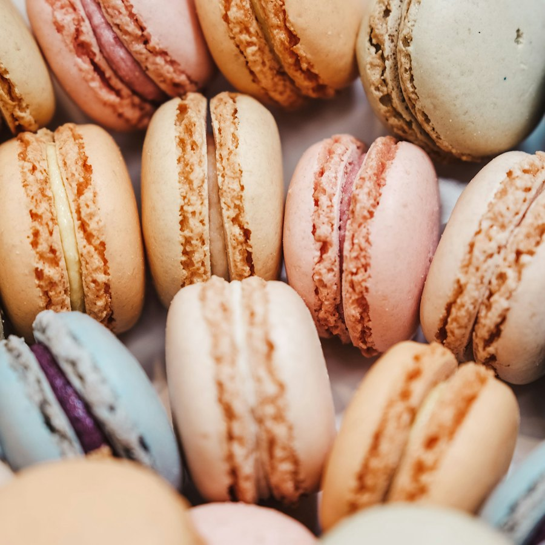
Makronky
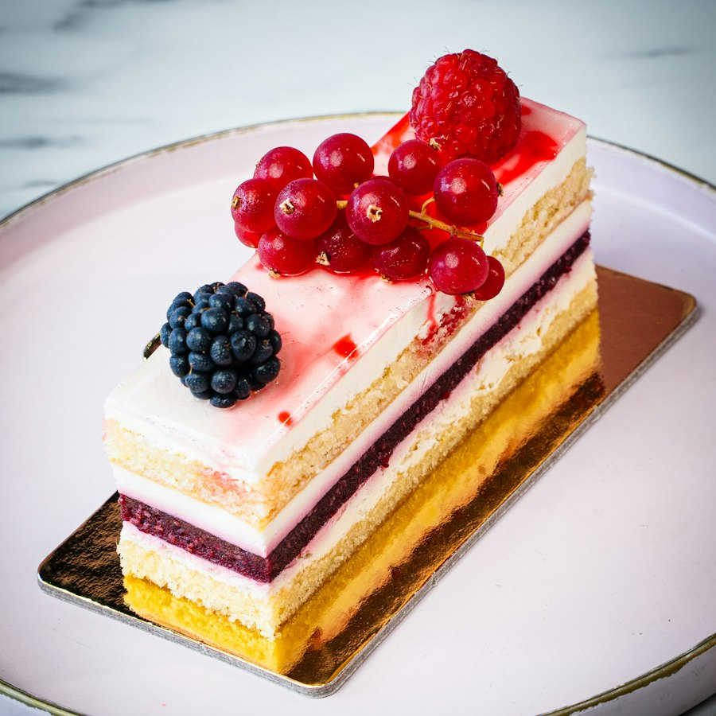
Zákusky
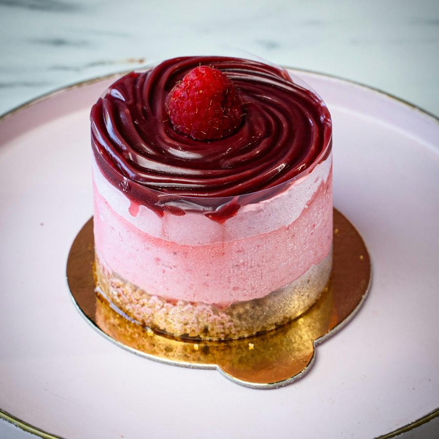
Francouzské dezerty
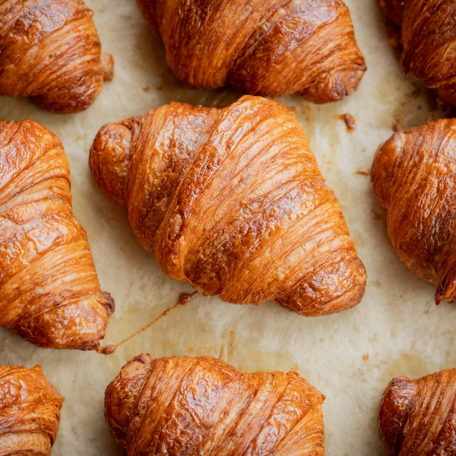
Croissanty
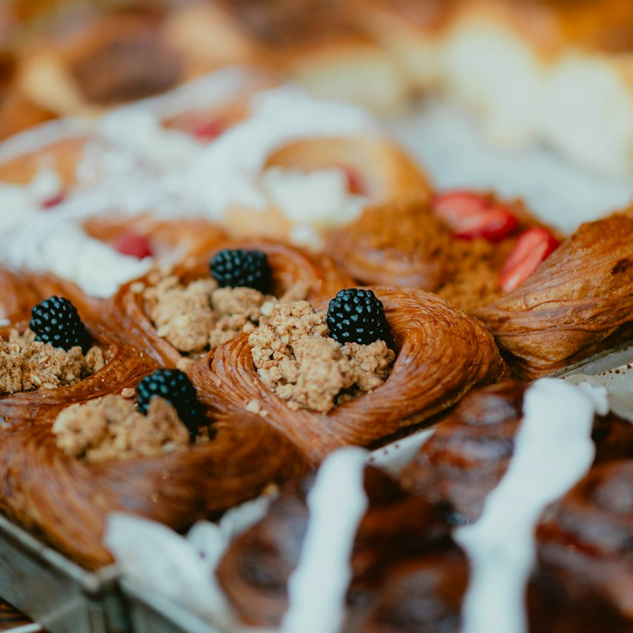
Koláče, i kynuté
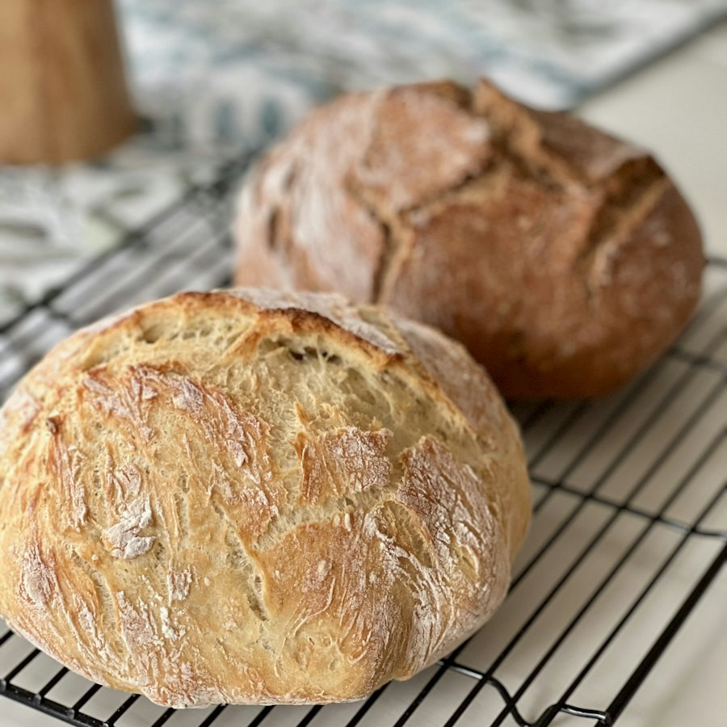
Vlastní chléb
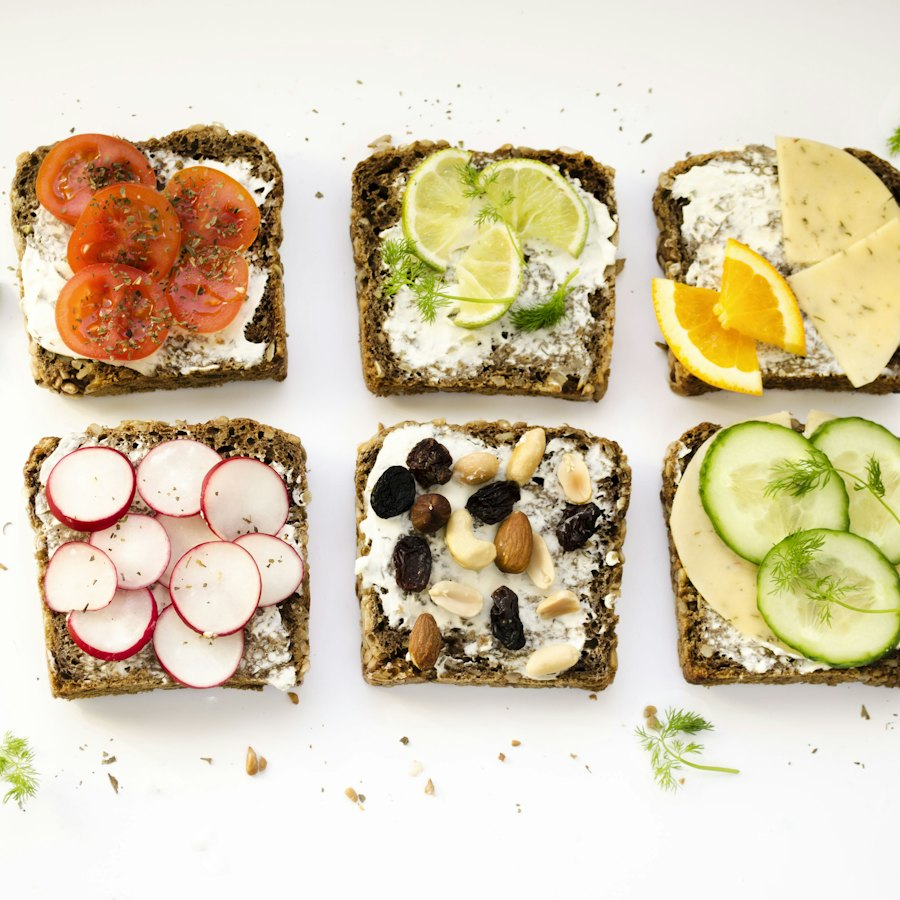
Obložené chleby a vlastní pomazánky
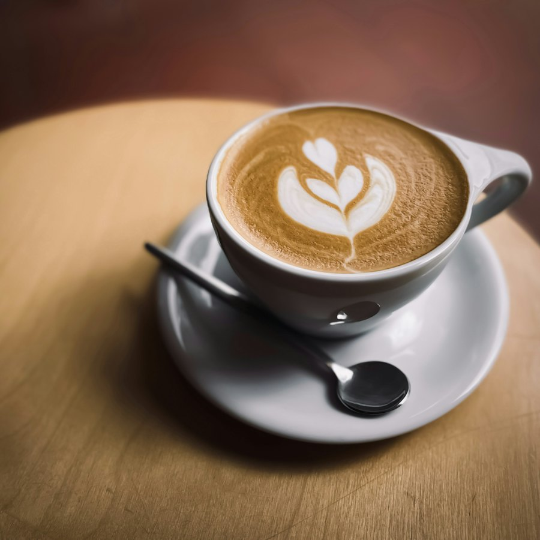
Káva
„V Cukrovém krámku milujeme vše sladké a připravujeme je jen z kvalitních surovin – bez umělých náhrad a ochucovacích past. Každý zákusek tvoříme s láskou a snažíme se splnit všechna vaše sladká přání.“
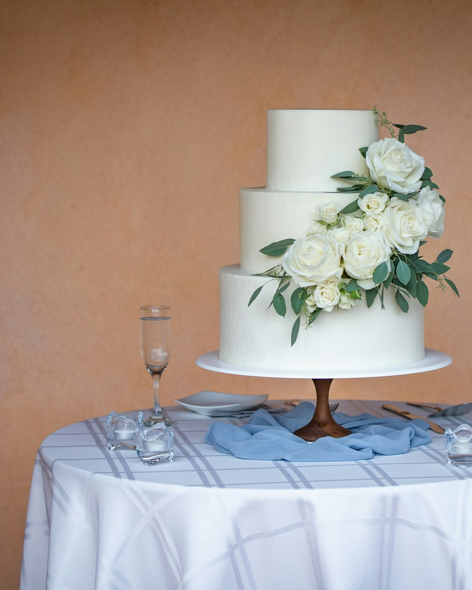
Svatby a firemní akce na klíč
Svatební dort, zákusky, makronky i obložené chleby. Řekněte nám, co chystáte, kdy a pro kolik lidí.
Poptat akci na FacebookuVánoční makronky a cukroví
Před Vánoci chystáme krabičky makronek a pečeme cukroví.
Na letošní nabídku se zeptejte předem.
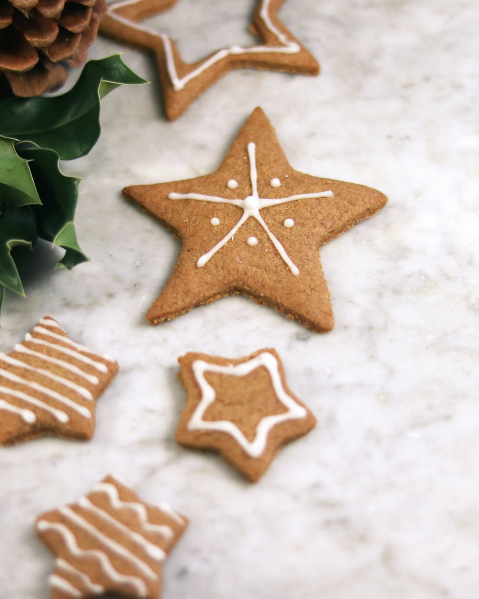